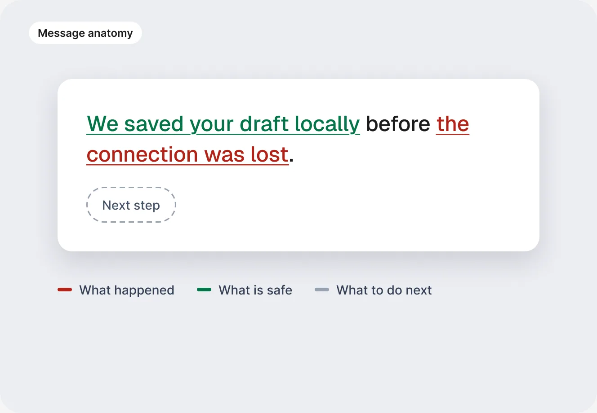

Decision 1 of 5
Design for failure before redesigning the UI
The situation
The backend couldn’t be rewritten right away, and every crash showed users raw red and yellow code errors in the middle of a task.
What I did
I replaced them with a standardized error library. With a UX writer borrowed from another team, I wrote messages that explain what happened and what is safe, like “We saved your draft locally before the connection was lost.”
The trade-off
It didn’t fix the root cause, but it turned each system failure into a managed moment while engineering stabilized the platform.
Why it mattered
Enterprise clients judge stability by what they see when something fails. Messages that explain what happened and protect the user’s work turn a crash into a recoverable moment. For the business, it was the fastest way to calm the accounts at risk and cut crash-related support tickets while engineering fixed the backend.
